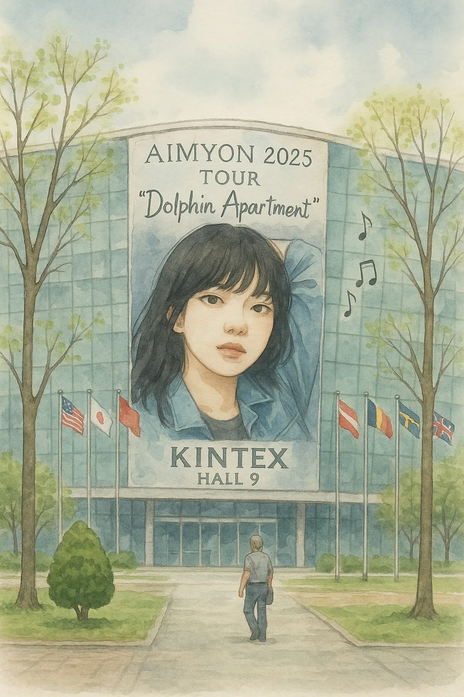
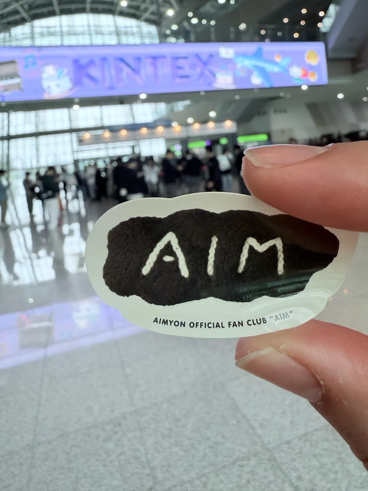
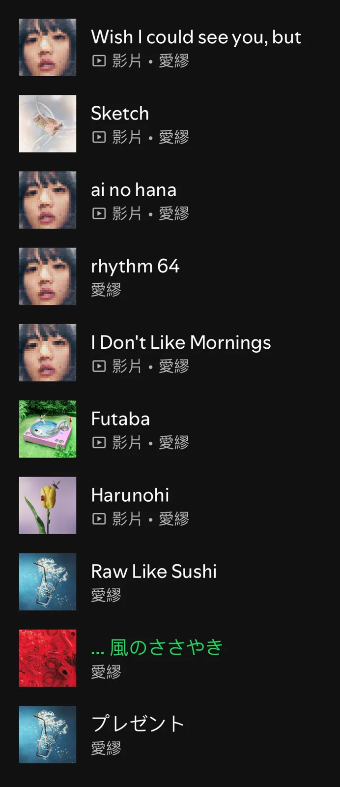

音樂無國界：AIMYON 韓國 KINTEX 現場
站在韓國的 KINTEX，聽著日文，想著中文。原本以為跨越語言需要費一點力氣，直到熟悉的聲音響起，才發現有些心情早就找到自己的入口。

我總覺得，某些音樂是帶著體溫的。像從別人口袋裡借來的打火機，火焰雖然一樣，卻多了一層難以形容的情感。AIMYON（あいみょん／愛繆）的歌對我來說，就是這種存在。
入場之前，把生活的重量暫時寄放
那天的目的地是 KINTEX Hall 9。四月的風還留著一點冬末的氣味，人群排得很長，像城市裡某種安靜進行的儀式。
大家依次交出包包，換得一個白色軟塑膠袋，在上面寫下姓名與電話。那一刻，像把生活的重量也暫時寄放了。
塑膠膠帶拼成的臨時攤位，沒有多餘的修飾，卻努力承接住眼前的人潮。這種寄物方式有點奇妙，既是交付物品，也是在陌生的地方，交出一小部分信任。
入場的時候，我發現自己其實不太緊張，反而有種篤定。像走進一間熟悉的二手書店，知道想找的那本書，就在架子的某個位置，靜靜等著我。
從下班後的便利商店，到異國的演唱會
《愛を伝えたいだとか》是我第一次聽見 AIMYON 的入口。
那是某個下班後的夜晚，一邊加熱便利商店的餐點，一邊聽見那個有點慵懶、卻很真摯的聲音。她唱得不疾不徐，像在跟自己說話。我後來聽了很多次，每次都像重新走回那個夜晚。
有些歌手陪伴的是一段特別的時期，AIMYON 卻慢慢走進了那些普通得不能再普通的日子：吃飯、洗衣服、下班回家，或只是什麼也不做。
於是，當我真的站在韓國等她出場，心情也沒有想像中陌生。比較像終於走到某個聲音的面前，想親耳確認：原來，這些日子裡陪著自己的歌，真的可以在眼前發生。
幾千個陌生人，共享一段熟悉的旋律
那天，我並不認識身邊的人，也沒有人認識我。但在 KINTEX 的那幾個小時裡，卻像和許多陌生人一起，掉進了一個透明的夢。
歌聲和光，把原本各自生活的人，短暫聚集在同一個地方。語言的距離還在，卻沒有阻止那些情感抵達。
她唱的是日文，在每個人的耳朵裡，卻都喚起了自己熟悉的生活。有人的回憶可能是一個夏天，有人想到一段關係，而我想到的，有時只是下班後那份還沒熱好的便利商店餐點。
那些片段很小，平常也不太會特別向誰提起。但一首歌突然響起，就知道它們其實一直都在。
五首歌，五個屬於自己的生活入口
整理這篇時，我也把反覆聽的幾首歌放在一起。它們各自接住了不同時候的我，也讓這場異地演唱會，有了舞台之外的延伸。
以下是文中提及的私人聽歌索引，並非當晚演唱會曲目表；歌曲的感受與解讀，也屬我自己的經驗。
《愛を伝えたいだとか》｜第一次聽見她的夜晚
這首歌讓我記得下班後的疲憊、微波等待的時間，還有第一次被那個聲音吸引的自己。每次再聽，都能找到最初靠近她的理由。
《マリーゴールド》｜一個被旋律保存的夏天
《マリーゴールド》對我來說，有很鮮明的季節感。像在便利商店外喝著氣泡水，突然聞到某種熟悉的氣味，整個下午就安靜了下來。
它讓我想起那些曾經擁有、後來卻不太容易說清楚的片段。旋律一來，記憶便有了形狀。
《裸の心》｜洗衣服時，也能安靜聽完的心事
我常在洗衣服的時候反覆播放《裸の心》。那首歌會讓人慢慢安靜下來，像周圍的雜音退遠，只剩自己的心情與旋律對話。
聽著聽著，我也會把它想成一種等待：等待愛，或等待自己終於準備好，能好好接受一份感情。
《君はロックを聴かない》｜想把喜歡的歌，分享給另一個人
排隊等待商品取貨時，腦中突然響起這首歌。我想到的是，即使彼此喜歡的東西不一樣，仍想拿出一首歌，試著讓對方靠近自己的世界。
那也很像異地旅行時的心情。站在韓國、聽著日文、想著中文，說不清楚的感受很多，卻仍願意試著理解，也期待被理解。
《3636》｜把注意力放回日常
後來也常聽《3636》。對我來說，那種節奏像手指輕敲桌面，讓人把注意力放回生活裡細小的聲音。
我喜歡的，正是這種日常感。聽完之後，會想重新看看自己的房間、餐桌，以及那些每天經過，卻不一定認真留意的地方。
音樂無國界，是一段實際發生的感受
演唱會開始前，我就已經有一種被理解的感覺。熟悉的聲音，讓陌生的地方有了可以安放自己的位置。
「音樂無國界」於是變得很具體。像走進異地城市的一間小咖啡館，沒有人知道你從哪裡來，背景卻剛好播放著一首熟悉的歌。
那一杯咖啡依然溫熱，窗外依然有人經過。能在這裡，好好聽完一首歌，就已經很好。

把導讀留給文字，把回憶交給播放清單
如果你也想從這篇文章走進 AIMYON 的音樂，可以打開這份 AIM BEST 精選播放清單，挑一個不用趕時間的晚上慢慢聽。
也許你會先喜歡上一段旋律，過陣子才發現，它已經和生活裡的某個片段連在一起。
在 Spotify 開啟 AIM BEST 精選播放清單 →

本站延伸導讀｜讓 AIMYON 串起下一段旅程
- 4/19 在韓國聽日本人的演唱會
接著閱讀同趟韓國之旅的另一篇演唱會紀錄，與這篇偏重歌曲及心情的散記搭配閱讀。 - AIMYON 甲子園演唱會紀念專頁
從韓國的 KINTEX，接著翻到日本甲子園的音樂旅行，看看同一個聲音，如何連起不同城市的記憶。 - 〈Ring ding〉MV 隨筆
離開演唱會現場之後，再從一首歌的影像，延續對 AIMYON 作品的喜歡。
本文由個人旅行與聽歌經驗出發，經 AI 協助潤飾整理。寄物流程為當次現場經驗，其他場次請依主辦單位公告。